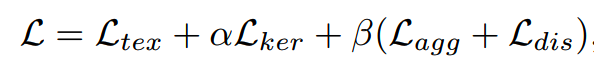

文字检测¶
问题与挑战¶
- 长宽比例变化较大
- 文本框的形状较多：水平，垂直，倾斜，弯曲
主要解决方案¶
主要解决方案包含两种，分别是基于回归方法的文本检测，以及基于分割方法的文本检测
基于回归的文本检测¶
TextBoxes¶
- backbone
- VGG
- neck
- 多层级预测
- head
- loss
- 坐标表示方式
- 损失函数
- anchor
- 三种不同的scale和ratio，组合生成9种不同的anchor box，用于获取图片中的候选目标框
TextBoxes++¶
- backbone
- neck
- head
- loss
- update
- 引入了任意四边形的表示方法
- (left_top,right_top,right_down,left_down)
- (left_top,right_down,angle)
- (left_top,right_top,height)
- 引入了任意四边形的表示方法
EAST¶
- backbone
- PVANet
- neck
- FPN
- 用最后一层的特征做分类与回归任务
- prediction
- (top,down,left,right,angle,score)
- (x1,y1,x2,y2,x3,y3,x4,y4)
- 与yolo系列（多层级预测）不同的是，这里仅仅使用最后一层进行参数回归分类
-
loss
- 文本得分损失，论文中使用cross entropy，一般会用dice loss替代
- 几何损失，每一个像素与边界的smooth l1损失
-
nms
- Locality-Aware NMS(局部感知NMS)
- 是一种合并几何体的方法（假设临近的几何体是高度相关的)
- 以一定的顺序遍历每一个几何体p，并判断每个几何体与其他几何体的重叠情况
- 假如重叠面积超过指定阈值，则按照score对几何体的坐标加权平均
- 重叠面积达不到指定阈值，则将p加到后处理集合S中，并开始遍历q
- 用标准的NMS方法处理集合S
- 合并逻辑：假如两个box的交并比超过指定阈值，则将box score作为权重因子对坐标加权平均
- Locality-Aware NMS(局部感知NMS)
-
标签生成
- 沿边缘向内缩减两端点距离的0.3r
基于分割的文本检测¶
PSENet¶
- 主要创新
- 基于语义分割方法进行文字检测任务，模型拟合多个不同的text kernel，并提出了scale expansion algorithm聚合text kernel，得到文本实例。
- 提出了渐进式尺度扩展算法
- backbone
- resnet
- neck
- FPN
- 与DBNet不同的是，这里会再次利用每个层级的feature map融合的结果，并预测k个分支，分别预测不同的kernel
- head
-
loss
- dice loss
- 计算每一个核的损失
- dice loss
-
渐进式尺度扩展
- 从最小的kernel开始，使用dfs算法，合并周围的较大的kernel区域
- 标签制作：见DBNet标签制作
- 其他
- 个人感觉PSENet与PANNet速度差不多，主要是PANNet采用了层数更少的backbone,为了弥补层数的不足，PANet引入了FPEM与FFM
- PANet与PSENet后处理的时间复杂度总体一致，都需要遍历所有可能的text pixels
PANNet¶
-
主要创新
-
低计算代价的segmentation head
- Feature pyramid Enhancement module(FPEM),级联的U-shape模型，引入多层级信息辅助语义分割
- feature Fusion module(FFM),聚集FPEM不同深度的特征，作为最终用于语义分割的特征
-
可学习的后处理
- Pixel aggregation，网络可以学习文本相似向量，在临近的text kernel上，选择性的聚合像素
-

-
引入了similarty vector的概念，判断每个位置p的simlar vector与kernel的simialr vertor的距离判断当前像素属于哪一个核。
-
backbone
-
resnet18
-
neck
-
FPEM
- FPN的增强版
- partA:侧向连接结构，连接具有相同尺寸的前馈feature map与采样feature map好处在于融合位置信息与语义信息
- partB:侧向连接结构，连接具有相同尺寸的上采样feature map与下采样feature map
- 使用了DWConv
-
FFM
- 对FPEM做element-wise addition操作
-
head
-
loss
 * L_tex * 文本损失，dice loss * L_ker * 核损失，dice loss * L_agg * 文本(similarity vector)与kernel(similarity vector)的距离损失
 * G(K_i)表示第i个kernel的相似性向量，是第i个kernel范围内相似性向量的平均
* F(p)表示像素p的相似性向量
* 相似性向量是网络投影到k维空间的所表示的结果
* L_dis
* 不同kernel的similarity vector的距离损失
* G(K_i)表示第i个kernel的相似性向量，是第i个kernel范围内相似性向量的平均
* F(p)表示像素p的相似性向量
* 相似性向量是网络投影到k维空间的所表示的结果
* L_dis
* 不同kernel的similarity vector的距离损失

-
PA (像素聚合)
- 确认kernel，每个kernel就是一个文本区域（相比文本区域会小一些）
- 当kernel(当前文本框所表示的kernel的平均)与text pixel的相似度向量小于d时，则将该text pixel并入当前kernel，（每个kernel上下左右四个方向）
- 每个text一个kernel，相比与PSENet，kernel数目会更少
DBNet¶
- 主要创新点
- 提出了可微分二值化(DB)模块，通过优化DB模块，模型可以自适应地设置二值化阈值，进而简化后处理过程，可以提高模型的检测效果。
- 简化后处理：较为耗时的后处理方法是对每个文本像素进行聚合，求得连通域，得到文本区域（dfs算法），较为耗时，而DBNet直接对 probability map做二值化，直接计算文本区域的边界。
- backbone
- resnet18
- deformable convolution
- 传统卷积几何结构固定，对不规则物体的模拟存在限制
- 引入偏移量的概念，学习input feature map每个位置的偏移量，偏移后的位置可能是小数，因此用双线性插值的方法获取偏移后的值，随后按照对应元素相乘相加的计算方式获得输出feature map
- 叙述
- 传统卷积几何结构固定，在模拟拥有复杂形状的物体是存在一定的限制，可变形卷积通过引入位置偏移量的概念，学习input feature map每个 位置的偏移量，并通过双线性插值的方法得到插值后的feature map,最后按照传统卷积计算的方式计算即可，deformable roi pooling也是如此
- neck
- FPN
- 侧向连接结构，合并top-down(feature map上采样的过程)与bottom-up(backbone的feed-forword的过程)相同尺寸的feature map
- 好处在于可以融合浅层位置信息与深层的语义信息
- head
- threshold map
- 文本阈值
- text map
- 像素文本概率
- 将FPN的结果上采样到原始图像大小，预测text prob与thres
- DBHead
- threshold map与text map作为输入，在DBHead的作用下（sigmid函数），输出是文本的概率
-
loss
- DBLoss
- 将文本阈值T,文本概率P作为sigmoid函数的输入，构建Differentiable Binarization模块
- 边界阈值较高，在DB模块的作用下，会强行拉高边界文本阈值的预测概率值，进而使得边界更加的明显【抛弃以dfs为核心的复杂后处理，直接计算二值化图的轮廓。
- DB的输出与标签计算交叉熵损失，常用dice loss替代
- L1 Loss(阈值损失):
- 阈值模块的预测结果标签计算L1损失
- 标签的取值范围：[0.3,0.7] ，取值越大的像素越靠近文字框的边界，边界阈值越高，通过DB模块后， 就会拉高该像素是文本的概率，从而增加边界的区分性。
- cross entropy(像素分类损失，常用dice loss替代)
-
dice loss
-
解决了正负样本不均匀的问题（基于像素的分类问题正负样本比例差异较大），小目标下，容易产生剧烈的震荡， 原因在于小目标样本的分母相对较小，重叠面积稍微的偏移，都会引起loss剧烈的变化
-
dice loss解决样本不均匀问题？
- F1可看作是dice coefficient的一种特例，相交的区域是TP，其他两个区域分别是FN和FP，（F1值可以在正负样本不均匀的情况下度量模型的性能）
- General dice loss

- 将多个类别的dice进行整合，用一个统一的式子表示
- dice focal loss

- 在dice loss的基础上增加了单像素的focal loss
- Tversky loss
- 相当于dice loss的变体，增加了两个系数调节FP和FN

- A-B 相当于 FP , B-A 相当于FN,A交B相当于TP
- 标签制作
- Vatti clipping algorithm
- 通俗地来说，就是等比例的缩放多边形，缩放的长度是周长与面积的函数
- 该算法可获得每个标注文本框的迷你框，缩小后的文本区域作为模型 text map 的监督标签（缩小预测区域，可以有效避免大框部分重叠导致两个框粘连的问题）
- 基于缩小后的文本框，生成 threshold map 的监督标签,生成规则：缩小后的边界区域阈值为0.7，其他位置的阈值与距离边界的长度程负相关（一次线性函数，最小是0.3）

- 推理阶段
- 用一个固定的阈值0.3，获取probabilitity map的二值化图
- 根据二值化图得到shrink regions
- 在将shrink regions放大回去
- 拓展
- 后处理
- 设置静态阈值或者使用动态阈值获得二值化输出结果
- cv2.findContours检测二值化结果的轮廓，轮廓可以是任意多个点
- cv2.minAreaRect获取任意多边形的最小外接矩形，对于多边形用cv2.approxPolyDP提取多边形曲线
- 噪音过滤：通过设置四边形的最小边长，过滤部分错误召回的结果
-
-
模型过切割问题
- 假如标注数据中，存在很多过切割的样本，那么训练后的模型对间隔也十分敏感，若要降低过切割问题，可以从标注样本入手
- MaskTextSpotter
- 基于Mask RCNN,将输出替换为字符实例分割图与文本实例分割图
- MASTER的变种【平安】
- 最初是是为了文字识别方法方法中attention drift问题以及s2s方法无法并行化的问题提出，cnn+transformer结构